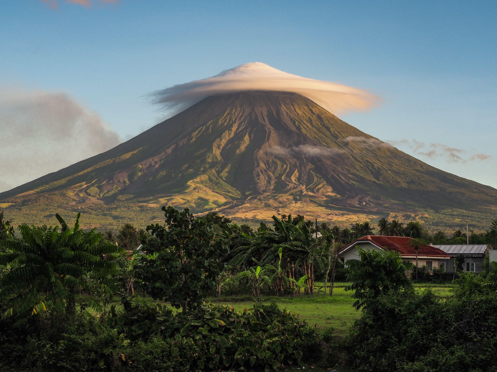
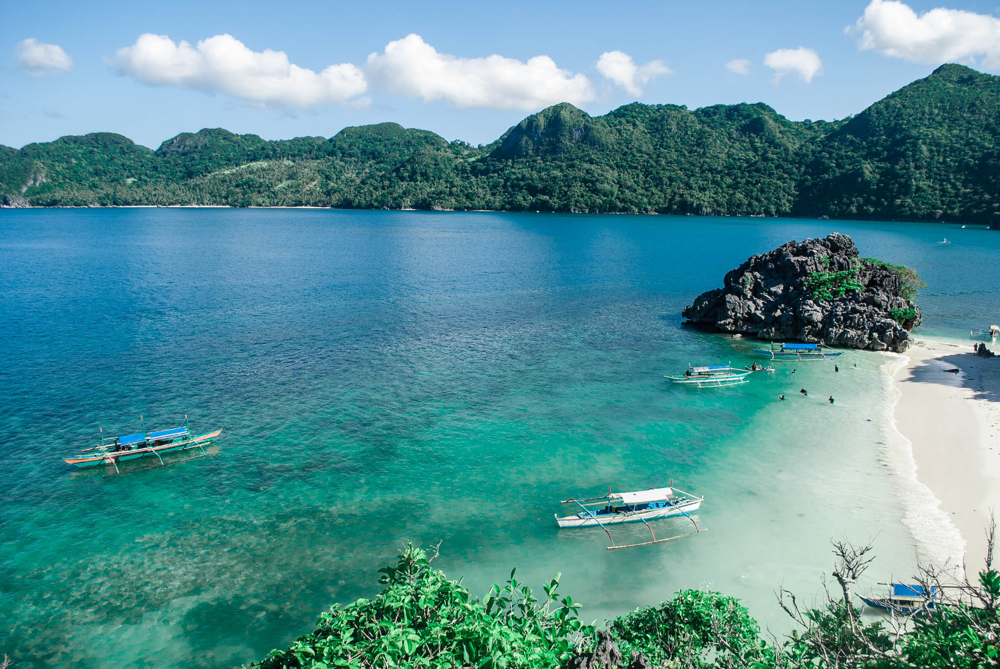
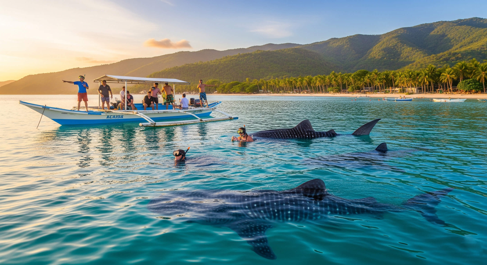

Welcome to the Bicol Region, the "Land of the Perfect Cone." Located at the southern tip of Luzon, this area is a masterpiece of volcanic landscapes, turquoise waters, and world-renowned spicy cuisine. It is a place where adventure meets deep-rooted heritage.
Mayon Volcano: Famous worldwide for its "perfect cone" shape, Mayon is the crown jewel of Albay. It stands as a majestic but powerful reminder of nature's beauty and strength.

Caramoan Islands: A tropical paradise hidden in Camarines Sur. With its towering limestone cliffs and powdery white sand beaches, it has become a global destination for island hoppers and nature lovers.

Donsol: Known as the "Whale Shark Capital of the World," Donsol offers a unique eco-tourism experience where you can swim with the Butanding (whale sharks) in their natural, protected habitat.

Whether you are testing your limits with spicy Bicol Express or exploring the depths of the ocean, the Bicol region promises an experience that is truly "Sili" hot and heavenly.
Prepared by: Imie Jhoy P. Malvar
© 2026 All Rights Reserved. This website and its content are the original work of the author.